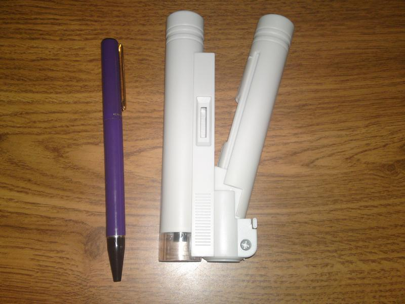

Comercial y representaciones J. Velasco
Comercial y representaciones J. VelascoCaracterísticas
- Ampliación: 150X (Disponible en 40X y 80X).
- Tamaño de bolsillo.
- Ruleta de enfoque para el ajustar la claridad.
- Funciona con 2 pilas AA.
- Intuitivo LED que se activa al abrir el arco.
- Escala de medición para determinar el tamaño exacto de los objetos pequeños.
- Un mínimo de escala: 0.005 mm; máxima: 1,0 mm.
- Incluye una bolsa de transporte, para protegerlo de arañazos, desgaste, etc.
